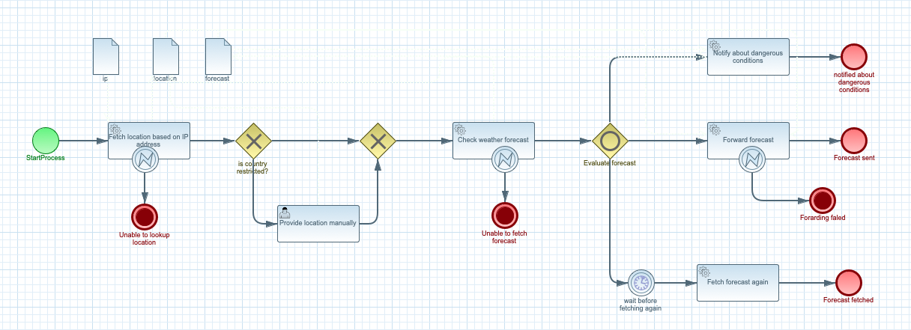

Error handling and retries
Regardless of what use case given service implements (be it event streams, IoT, etc) there is always a need to handle unexpected situations.
Automatiko comes with built in error handling for operations that are being executed as part of the workflow instance. Error handling can be applied to
-
individual activities
-
subworkflows
-
entire workflow instance
Errors are usually identified via error code that is used to find correct
error handler (error event node) inside the workflow definition.
Defining errors
Whenever there is a potential that given activity can result in an error then error handling should be defined for it.

In the above example there are three activities that can result in an error
-
Fetch location based on IP address
-
Check weather forecast
-
Forward forecast
Two first activities are REST calls, while the third one is simple Java service (method invocation) that every third call with throw an error.
In this scenario error handlers (error event node) is attached to given
activity that means it is only active when the node it is attached to is active.
| Error handlers always cancels the activity they are attached to and take the alternative path |
To be able to handle errors, error itself must be defined. It can be done directly
on the event handler (error event noode) by editing error definition
Clicking on the plus icon button allows to create new error, clicking on the
pencil icon button allows to edit existing error.
|
Error handlers can map the error details to a workflow data object so it might be used to troubleshoot given error.
Most important parts of error definition is
-
name - name of the error so it can be easily understood
-
error code - the text value that uniquely identifies type of error
-
data type - optional data type of the error being produced which can be mapped to data object of the workflow instance
Services that are custom can make use o this error handling by throwing
exceptions of io.automatiko.engine.api.workflow.ServiceExecutionError type.
It allows to set the error code that will be used by the workflow instance
to locate the error handler and the root cause of the error.
Retries
One of the most common requirements around error handling is retries. Sometimes errors are temporary like network glitch, short outage of a service etc. In such scenarios there should be an easy way to let the operation to retry instead of directly taking the error path defined in the workflow.
Automatiko comes with built in retry mechanism that allows you to define two attributes to control retries
| Attribute name | Description | Default value |
|---|---|---|
retry |
Defines time interval that triggers retry, it is an ISO format duration e.g. PT5S to retry every 5 seconds |
No default value |
retryLimit |
Defines how many retries there should be before triggering error handler and take the error path |
3 |
retryIncrement |
Duration which will be added to the delay between successive retries (ISO 8601 duration format) |
PT5M |
retryMultiplier |
Value by which the delay is multiplied before each attempt |
1.5 |
Retry attributes are defined on the error itself via custom attributes
There is no need to make anything more to automatically benefit from built in error handling and retries.
| When using process management addon there is an instance visualization that will mark activities that are in retry with a warning icon. |